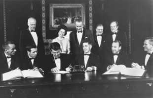
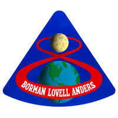

12/3/1968SearchApollo 7 and 8 Crew in the White House: Apollo 7 and 8 flight crews sign a commemorative document to be hung in the Treaty Room of the White House honoring the occasion. Those signing are from left to right: Apollo 7 Astronauts: Walter Cunningham, Donn F. Eisele, and Walter M. Schirra. Apollo 8 Astronauts: William A. Anders, James A. Lovell, Jr., and Frank Borman. Standing are: Charles A. Lindbergh (also a signer) Lady Bird Johnson President Lyndon B. Johnson NASA Administrator James E. Webb, Vice President Hubert H. Humphrey. (NASA on The Commons)Apollo 8 Logo: Astronauts- Frank Borman, William A. Anders and James A. Lovell Jr. Apollo 8 was the first mission to orbit the moon, making Borman, Anders and Lovell the first humans to see the far side of the moon. They conducted lunar landing site tracking while in orbit for future missions to the moon.